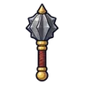
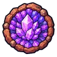
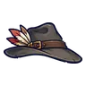
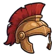
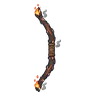

โกเลมหินแดง · ร่างผลึก
มอนธาตุไม่มีธาตุ Lv 64–72
เจอที่
| แมพ | โซน | Lv | ภูมิภาค |
|---|---|---|---|
| เหมืองลึกผลึกส้ม | 64–72 | แดนใต้สีแดง | |
| เหมืองลึกผลึกส้ม | ห้องผลึกใหญ่ | 70–72 | แดนใต้สีแดง |
| ห้องสูบน้ำเหมืองท่วม | 64–72 | แดนใต้สีแดง | |
| ห้องสูบน้ำเหมืองท่วม | เครื่องสูบน้ำยักษ์ | 70–72 | แดนใต้สีแดง |
| โถงหินจีโอด | 64–72 | แดนใต้สีแดง | |
| โถงหินจีโอด | จีโอดยักษ์ | 70–72 | แดนใต้สีแดง |
| ค่ายคนงานใต้ดิน | 64–72 | แดนใต้สีแดง | |
| ค่ายคนงานใต้ดิน | ปล่องลิฟต์เหมือง | 70–72 | แดนใต้สีแดง |
ค่าสถานะตามเลเวล
| Lv | HP | ATK | DEF | MDEF | EXP | Job |
|---|---|---|---|---|---|---|
| 64 | 70,423 | 194–291 | 49 | 12 | 197 | 148 |
| 68 | 83,968 | 208–313 | 52 | 12 | 208 | 156 |
| 72 | 98,541 | 224–336 | 55 | 13 | 220 | 165 |
ตีด้วยธาตุไหนดี
แรงขึ้น: —
เบาลง: วิญญาณ ×0.25
วัตถุดิบที่ดรอป
| ของ | โอกาส | |
|---|---|---|
| ผลึกแกนโกเลม | 75% | 1 ชิ้น (15% ได้ 2) |
อุปกรณ์ที่ดรอป (6)
| ของ | โอกาส |
|---|---|
 กระบองอัศวิน | 0.25% |
 โล่จีโอดผลึก | 0.24% |
 หมวกนักล่าค่าหัว | 0.08% |
 หมวกเกราะหงอนแดง | 0.08% |
 ธนูไม้ถ่านคุ | 0.06% |
| 0.06% |
สกิล
ร่างแข็ง (Lv 25+) · ร่างแข็ง (Lv 60+) · ทุบพื้น (Lv 60+)